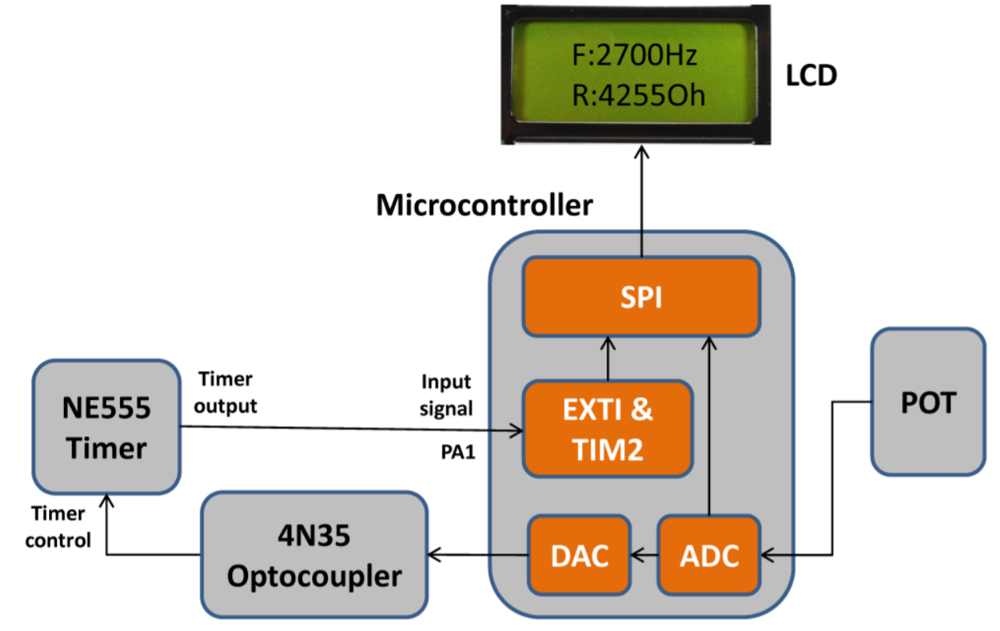

Completed Dec 2018
This was a project for ECE 355, a third-year microcontroller programming course at UVic. The goal of the project was to design a program for the STM32F0 microcontroller that would take in an analog signal, convert that signal to digital, read the signal and then convert back to analog to drive a 555-timer circuit. The 555-timer circuit would output a variable pulsating signal (~5kHz) which would be converted back to digital and outputted to an LCD through the SPI.

The signal generator started with a 10k potentiometer. The potentiometer was attached to the microcontroller where it was converted to a digital signal through the ADC. The signal was then outputted to the LCD through the SPI. The signal was also converted back into an analog signal through the DAC and delivered to the 4N35 optocoupler.
The 4N35 optocoupler created a simple voltage divider (acting as a variable resistor) for the 555-timer circuit. This varied the signal from 4.95kHz to 7.18kHz which was displayed on the LCD. It was noted that the program had the ability to read up to roughly 300kHz and down to 8Hz. Below 8Hz and the internal timer on the microcontroller overflowed.
The SPI used an 8-bit protocol to transfer the data. Once problem encountered was the refresh rate of the LCD vs the transfer rate of the GPIO pins. The GPIO pins refresh rate on the microcontroller had to be slowed to 50MHz to better match the SPI.